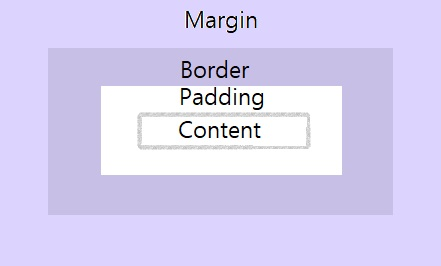

생활코딩
생활코딩 수업을 듣고 css를 실습해본다.웹페이지를 아름답게 디자인하고싶어! 새로운 욕망 (2장-3장)
웹페이지를 아름답게 디자인하는 갈림길
- html의 문법에 태그를 추가 - 쉬운길 : 1)비효율적, 2)웹의 정보의 질을 떨어뜨림
- CSS - 어렵지만 근본적인 해결책 :
1)정보를 가치를 높여줌 - html에서 디자인의 기능을 뺏어옴,
2)효율적(폭발적 효과!) 왜? 중복을 제거!
웹페이지의 사이즈 자체를 줄여줘서 수정의 효율(유지보수) 뿐만아니라, 웹페이지 규모가 커질수록, 그 처리(속도)에도 큰 효율이 나타난다.(+가독성)
디자인과 관련된 코드는 style tag안에 다 넣어 버림으로써, 이 웹의 정보(내용)에는 디자인과 관련된 코드는 단 한줄도 포함하지 않게 된다. 그럼으로써 웹 페이지가 해석될 때, 정보만을 가진 코드들을 분석해서 여러가지 작업을 각자의 의도에 맞게 해석할 수 있다. (html이 정보에 전념가능, 정보의 가치를 높여줌)
CSS의 기본 문법 (4장)
웹페이지에 CSS를 포함시키기 위해서는 html과 CSS가 완전히 다른 언어이기 때문에 웹브라우저로 하여금 어디서부터 어디까지가 CSS인지 알 수 있게 해줘야 한다.- style 속성의 속성값으로는 반드시 CSS가 온다.
- style tag를 이용
- style 속성을 이용 : 적용부분에 직접 적용, 선택자(selector)를 사용할 필요 없음
ex)style="color:blue;text-decoration: none;"
CSS의 기본문법 핵심요약 (5장)
~06.02.2022.
CSS의 양대산맥, 효과와 셀렉터 (6-7장)
6장 : WEB의 사이즈를 키우고 가운데정렬하기 실습 (스스로 알아내기)
7장
- 효과에 대한 값을 셀렉터로 지정 할 시 .xxx라고 지정한다. cf) tag를 셀렉터로 지정할 시 xxx
- 효과 적용 순서: 하나의 대상이 동급의 두개이상의 효과가 적용될 시, 가까운(나중에 적용된) 효과를 먼저 따른다.
- 셀렉터 우선순위 : id(#) > class(.) > tag 순서 = 구체적인것이 포괄적인것 보다 우선순위! 작업의 효율!
- 검색 키워드 : CSS selector
- selector: 우리가 원하는 효과를 정교히 타겟팅가능, 코드의 양을 획기적으로 줄임, 하나의 코드로 전체적인 부분을 수정하는 똑똑한 코드의 토대
~06.03.2022.
박스모델 (8장-9장)
8장 : 박스모델 개념과 이론
- block: 화면 전체를 쓰는 tag
- inline element: 자신의 content 크기만큼을 갖는 (부분을 쓰는) tag
- cf)block과 inline은 display의 속성의 기본값일 뿐, css를 통해 언제든 바꿀 수 있다.
- tip) 필요에따라 display 속성값을 none으로 할 시, tag를 보이지 않게 할 수 있다.
- /**/: CSS에서의 주석
- CSS tag의 중복을 줄이는 연습을 할것. (예제는 box.html참고)
- ★ css box model : content, padding, border, margin의 개념
 - ★ web page에서 우클릭 - 검사(inspect)
각 tag를 선택하면 어떤 css style의 영향을 받고 있는가를 일목요연히 보여줌(알 수 있음)
css와 html이 복잡해 졌을 때, 어떤 css의 영향을 받는지 알기 어려울 때에 분석시 이런 도구를 사용
9장 : 박스모델 실습
그리드 (10장-11장)
9장 : 그리드 개념과 이론
- div: 정보의 의미를 담지 않은 무색무취의 tag. only 디자인의 의미로 사용, block level element
- span: 정보의 의미를 담지 않은 무색무취의 tag. only 디자인의 의미로 사용, inline element
- 2개의 tag를 나란히하는 등의 배치를 하고 싶으면 그 tag들을 감싸는 부모태그를 만들어야함
- columns = 열(가로), rows = 행(세로)
- 최신CSS기능을 사용할 때, 그 기능을 사용해도 되는 지, 안되는 지 적절성 : 데이터에 근거해서 판단할것
★ CanIuse.com: html,css,JavaScript들의 기술들을 현재 웹브라우저들이 얼마나 채택하고 있는지 통계를 보여주는 사이트 - 10장내용) #grid ol: grid라는 id값의 tag 밑에 있는 ol tag를 의미. 본문에서 ol이 여러번 나올 수 있으니까.
10장 : 그리드 실습
~06.06.2022.미디어 쿼리 (12-13장)
12장 : 미디어 쿼리(media query) 개념과 이론
- 반응형 웹/디자인 responsive web/design : 웹페이지 요소들이 반응해서 최적화된 모양으로 바뀌게 하는 것
기술배경: 웹은 거의 모든 정보 시스템 운영체제와 하드웨어에 상관없이 모든 시스템에서(=수많인 형태의 화면에서) 동작해야하는 어려움 - screen width > 800px = min-width:800px
screen width < 800px = max-width:800px - ★ 미디어 쿼리가 무엇인가, 다양한 화면에서 웹은 어떻게 적응해 왔는가, 그럴때 어떤것(미디어쿼리)를 공부하면 될지를 느끼고 판단할 수 있다.
13장 : 미디어 쿼리 실습
코드의 재사용 및 수업 마무리 (14-15장)
14장 : 중복제거
- ★ 중복의 제거의 중요성과 새로운 기술 출현에서의 역할을 느끼기.
- ★ 어떻게 우리의 웹페이지를 효율적으로 할것인가.(재사용성, 가독성↑, 유지보수 편리화)
캐싱! - 경제적, 기술적으로 폭발적인 효율! - link tag : 웹페이지가 어떤 css파일과 연결되어 있는지 웹브라우저에게 알려, 웹브라우저는 이 링크(연결)되어있는 css파일을 다운받아 웹페이지에 적용하게 됨
- 이번 강의는 전체 내용이 중요하기 때문에 영상 첨부.
15장 : 수업 마무리
- CSS를 지탱하는 2개의 뿌리 : 속성을 많이 알수록 더 풍부한 표현, 선택자를 많이 알수록 속성을 더 정확히 표현!